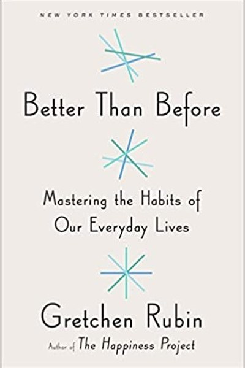

Library › Productivity
Better Than Before — Summary & Key Lessons

Mastering the habits of everyday life — by understanding the habits that master you.
📖 OPEN THE FULL INTERACTIVE BREAKDOWN →🌐 Read it in Hindi, Hinglish, Gujarati, Tamil & 22 more languages — free, with audio.
💡 The Big Idea
Rubin's research: most habit advice fails because it ignores personality — the same strategy that works for one person is torture for another. Her framework starts with the Four Tendencies (how you respond to expectations), then matches strategies to type: monitoring, scheduling, convenience, pairing, and the environment. The book's promise: you don't need more willpower; you need a habit design that fits who you are.
🧠 The 6 Key Lessons
Lesson 1: Know Your Tendency: The Four Types
The Framework
Rubin's signature tool: how you respond to expectations (outer — deadlines, others' demands; inner — your own promises) defines your type: Upholders meet both, Questioners question both, Obligers meet outer but resist inner, Rebels resist both. The lesson: the right habit strategy depends entirely on your type — an Obliger needs external accountability, a Rebel needs freedom framed as identity.
📖 Example: An Obliger who fails at personal workouts thrives when a friend is waiting at the gym; a Rebel who's told 'you must go' will resist even what they wanted. Read the full example →
⚡ Do this: Identify your tendency with Rubin's test (online or in the book). Write the one strategy your type needs most.
Lesson 2: Monitor Your Habits to Master Them
Monitoring
Rubin's finding: what gets measured gets managed — self-monitoring is one of the most powerful habit tools available. A simple checklist, a tracker, a written record turns vague intentions into visible patterns. The act of recording itself changes behaviour.
📖 Example: People who track food, sleep or spending improve even without changing anything else — the tracking is the intervention. Read the full example →
⚡ Do this: Choose one habit and track it visibly for one week — a paper calendar, an app, a notebook. Just track; don't judge yet.
Lesson 3: Make It Convenient (or Inconvenient)
Convenience
Rubin's practical law: convenience is a form of control. Make good habits more convenient and bad habits less convenient, and behaviour follows the path of least resistance. The strategy beats willpower because it never requires a decision — the environment decides for you.
📖 Example: Keeping fruit visible and chips in a high cupboard, gym bag by the door, phone charger in another room — the setup does the work. Read the full example →
⚡ Do this: Pick one good habit and one bad habit. Make the good one easier (remove friction) and the bad one harder (add friction) this week.
Lesson 4: Pair Habits With Pleasure
Pairing
Rubin's technique of pairing: combine something you want to do with something you need to do, or bundle a new habit with an existing one. She calls it 'habit pairing' — the new habit borrows the momentum of the old.
📖 Example: Listening to a favourite podcast only while running, or meditating right after your morning coffee — the anchor makes the new habit automatic. Read the full example →
⚡ Do this: Pair one new habit with an existing daily anchor. 'After [current habit], I will [new habit].'
Lesson 5: The Loophole of the Reward
Rewards
Rubin warns against rewards that become loopholes — 'I exercised, so I deserve the cake' can undo the habit. Her distinction: treats that reinforce the habit (post-run smoothie) vs treats that undermine it (post-run binge). Design rewards that celebrate the behaviour without cancelling it.
📖 Example: The gym-goer who celebrates with pizza every session is training a pizza habit, not a gym habit. Read the full example →
⚡ Do this: Check your current 'reward' habits: do they reinforce or cancel the behaviour? Replace undermining rewards with reinforcing ones.
Lesson 6: The Environment Is a Silent Habit-Maker
The Setup
Rubin's final emphasis: we shape our spaces, then our spaces shape us. The desk, the kitchen, the bedroom — each environment silently encourages or discourages habits. The most reliable change isn't inside your head; it's in your room.
📖 Example: People who keep the TV out of the bedroom sleep better without deciding to; the environment decided for them. Read the full example →
⚡ Do this: Redesign one space this week to make your target habit the default — and your bad habit the exception.
✅ 5-Step Action Plan
- Identify your Four Tendencies type and its key strategy.
- Track one habit visibly for a week.
- Make one good habit convenient, one bad habit inconvenient.
- Pair one new habit with an existing anchor.
- Redesign one environment to make the right choice the default.
⚠️ When This Doesn't Work
Rubin's 'know your tendency' framework is the best in the field — and its self-knowledge can become self-justification: 'I'm a Rebel, so I can't do routines' becomes a permanent excuse. The Osborne effect is the business version: announcing your future perfection (the new computer) killed the present product. The caveat: personality frameworks describe starting points, not ceilings. Knowing you're an Obliger should lead you to build accountability, not to announce that accountability is impossible for you. The framework is a map; the walking is still yours.
💀 The Graveyard Proves It
💻 Osborne Computer — The Company That Announced Itself to Death. Burn: Bankruptcy in months. Read the full case study →
💬 Best Quotes from Better Than Before
- “We can't expect to change our habits if we don't change the conditions under which we change them.”
- “What you do every day matters more than what you do once in a while.”
- “The best way to change a habit is to understand how you respond to expectations.”
Interactive version: mark lessons as read, listen in your language, share quote cards.